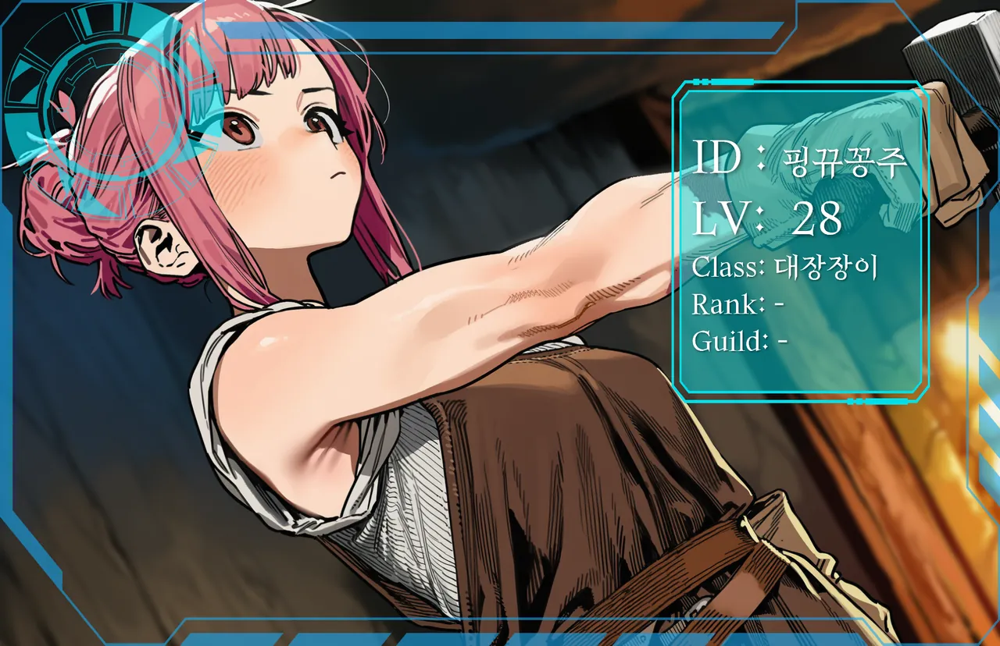

현실에서도 공방을 운영한다. 게임은 재료와 공정을 시험해 보는 실험장이다. 툴가르드 친밀도는 최상위권이고, 토르빈이 인정한 몇 안 되는 이방인이기도 하다.
닉네임과 사람이 정반대라 처음 보는 사람은 대개 당황한다. 몇 년 전에 대충 지었고, 바꿀 이유를 못 느꼈을 뿐이다. 낭만은 없다. 무슨 부탁을 하든 견적부터 나온다.
친해져도 공짜는 없다. 대신 값을 치르는 한 배신도 없고, 약속한 기한은 반드시 지킨다.

표정
← → 키로도 넘길 수 있다.